NCERT Solutions for Class 11 Physics Chapter 15 Waves are part of Class 11 Physics NCERT Solutions . Here we have given NCERT Solutions for Class 11 Physics Chapter 15 Waves.
NCERT Solutions for Class 11 Physics Chapter 15 Waves
Topics and Subtopics in NCERT Solutions for Class 11 Physics Chapter 15 Waves:
| Section Name | Topic Name |
| 15 | Waves |
| 15.1 | Introduction |
| 15.2 | Transverse and longitudinal waves |
| 15.3 | Displacement relation in a progressive wave |
| 15.4 | The speed of a travelling wave |
| 15.5 | The principle of superposition of waves |
| 15.6 | Reflection of waves |
| 15.7 | Beats |
| 15.8 | Doppler effect |
NCERT Solutions Class 11 PhysicsPhysics Sample Papers
QUESTIONS FROM TEXTBOOK
Question 15. 1. A string of mass 2.50 kg is under a tension of 200 N. The length of the stretched string is 20.0 m. If the transverse jerk is struck at one end of the string, how long does the disturbance take to reach the other end?
Answer:
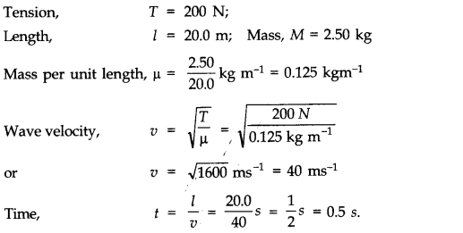
Question 15. 2. A stone dropped from the top of a tower of height 300 m high splashes into the water of a pond near the base of the tower. When is the splash heard at the top given that the speed of sound in air is 340 ms-1 ? (g = 9.8 ms-2 )
Answer: Here, h = 300 m, g = 9.8 ms-2 and velocity of sound, v = 340 ms-1 Let t1 be the time taken by the stone to reach at the surface of pond.
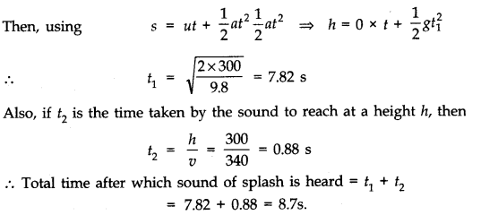
More Resources for CBSE Class 11
- NCERT Solutions
- NCERT Solutions Class 11 Maths
- NCERT Solutions Class 11 Physics
- NCERT Solutions Class 11 Chemistry
- NCERT Solutions Class 11 Biology
- NCERT Solutions Class 11 Hindi
- NCERT Solutions Class 11 English
- NCERT Solutions Class 11 Business Studies
- NCERT Solutions Class 11 Accountancy
- NCERT Solutions Class 11 Psychology
- NCERT Solutions Class 11 Entrepreneurship
- NCERT Solutions Class 11 Indian Economic Development
- NCERT Solutions Class 11 Computer Science
Question 15. 3. A steel wire has a length of 12.0 m and a mass of 2.10 kg. What should be the tension in the wire so that speed of a transverse wave on the wire equals the speed of sound in dry air at 2 0°C = 340 ms-1.
Answer:
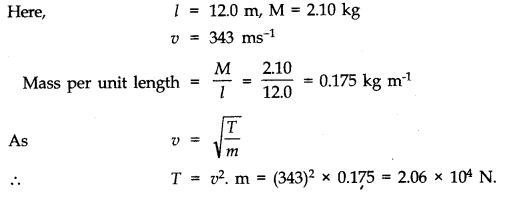
Question 15. 4.
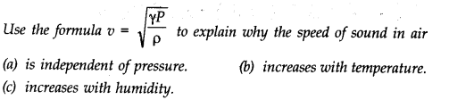
Answer:
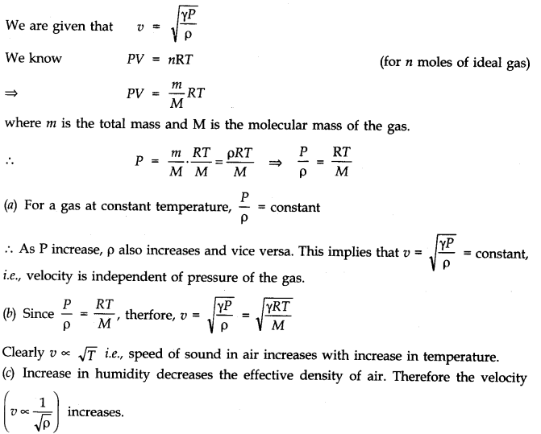
Question 15. 5. You have learnt, that a travelling wave in one dimension is represented by a function y = f(x, t), where x and t must appear in the combination x-vtorx + vt i.e., y =f (x ± vt). Is the converse true? That is, does every function of (x – vt) or (x + vt) represent a travelling wave? Examine, if the following functions for y can possibly represent a travelling wave?
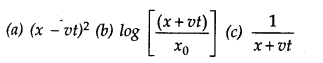
Answer: No, the converse is not true. The basic requirement for a wave function to represent a travelling wave is that for all values of x and t, wave function must have a finite value. Out of the given functions for y none satisfies this condition. Therefore, none can represent a travelling wave.
Question 15. 6. A bat emits ultrasonic sound of frequency 1000 kHz in air. If this sound meets a water surface, what is the wavelength of (a) the reflected sound, (b) the transmitted sound? Speed of sound in air = 340 ms-1 and in water = 1486 ms-1.
Answer:
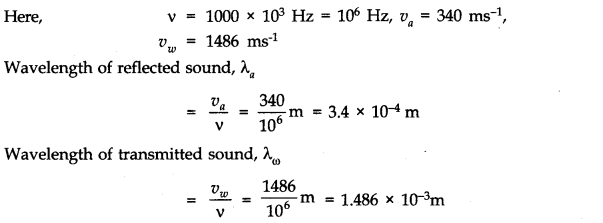
Question 15. 7. A hospital uses an ultrasonic scanner to locate tumours in a tissue. What is the wavelength of sound in a tissue in which the speed of sound is 1.7 km s-1? The operating frequency of the scanner is 4.2 MHz.
Answer: Here speed of sound => υ = 1.7 km s-1 = 1700 ms-1 and
frequency υ= 4.2 MHz = 4.2 x 106 Hz
.’. Wavelength, A = υ/V = 1700/(4.2 x 106) =4.1 x 10-4 m.
Question 15. 8. A transverse harmonic wave on a string is described by
y(x, t) = 3.0 sin (36 t + 0.018 x + π/4)
where x and y are in cm and t in s. The positive direction of x is from left to right.
(a) Is this a travelling wave or a stationary wave? If it is travelling, what are the speed and direction of its propagation ?
(b) What are its amplitude and frequency?
(c) What is the initial phase at the origin?
(d) What is the least distance between two successive crests in the wave?
Answer:
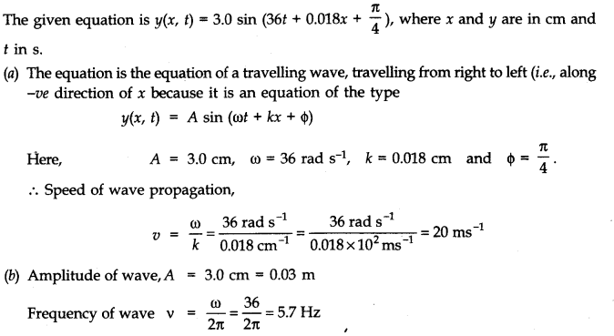
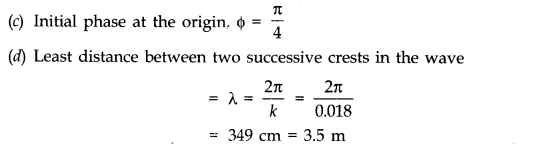
Question 15. 9. For the wave described in Exercise 8, plot the displacement (y) versus (t) graphs for x = 0, 2 and 4 cm. What are the shape of these graphs? In which aspects does the oscillatory motion in travelling wave differ from one point to another : amplitude, frequency or phase?
Answer: The transverse harmonic wave is
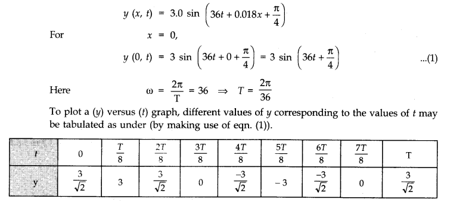
Using the values of t and y (as in the table), a graph is plotted as under The graph obtained is sinusoidal.
Similar graphs are obtained for y x = 2 cm and x = 4 cm. The (incm) oscillatory motion in the travelling wave only differs in respect of phase. Amplitude and frequency of oscillatory motion remains the same in all the cases.
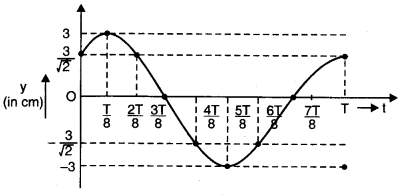
Question 15. 10. For the travelling harmonic wave
y(x, t) = 2.0 cos 2π (10t – 0.0080x + 0.35)
where x and y are in cm and t in s. Calculate the phase difference between oscillatory motion of two points separated by a distance of
(a) 4 m (b) 0.5 m
(c) λ/2 (d) 3λ/4.
Answer:
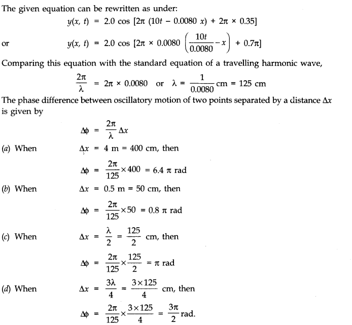
Question 15. 11. The transverse displacement of a string (clamped at its two ends) is given by y(x, t) = 0.06 sin 2π /3 x cos (120π t)
where x, y are in m and t in s. The length of the string is 1.5 m and its mass is 3 x 10-2 kg. Answer the following:
(i) Does the function represent a travelling or a stationary wave?
(ii) Interpret the wave as a superimposition of two waves travelling in opposite directions. What are the wavelength, frequency and speed of propagation of each wave?
(iii) Determine the tension in the string.
Answer: The given equation is
y(x, t) = 0.06 sin 2π/3 x cos 120 πt …(1)
(i)As the equation involves harmonic functions of x and t separately, it represents a stationary wave.
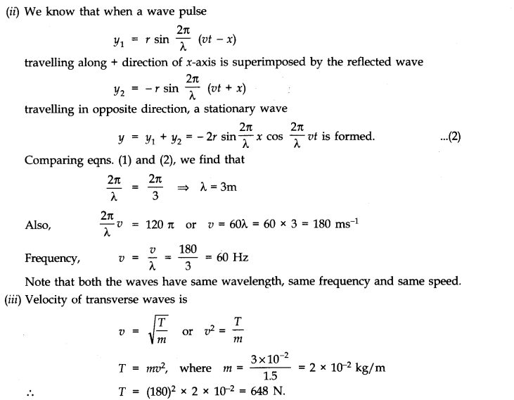
Question 15. 12. (i) For the wave on a string described in Question 11, do all the points on the string oscillate with the same (a) frequency, (b) phase, (c) amplitude? Explain your answers, (ii) What is the amplitude of a point 0.375 m away from one end?
Answer: (i) For the wave on the string described in questions we have seen that l = 1.5 m and λ = 3 m. So, it is clear that λ = λ /2 and for a string clamped at both ends, it is possible only when both ends behave as nodes and there is only one antinode in between i.e., whole string is vibrating in one segment only.
(a) Yes, all the sring particles, except nodes, vibrate with the same frequency v = 60 Hz.
(b) As all string particles lie in one segment, all of them are in same phase.
(c) Amplitude varies from particle to particle. At antinode, amplitude = 2A = 0.06 m. It gradually falls on going towards nodes and at nodes, and at nodes, it is zero.
(ii) Amplitude at a point x = 0.375 m will be obtained by putting cos (120 πt) as + 1 in the wave equation.
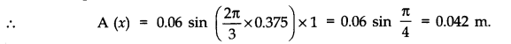
Question 15. 13. Given below are some functions of x and t to represent the displacement (transverse or longitudinal) of an elastic wave. State which of these represent (i) a travelling wave, (ii) a stationary wave or (iii) none at all
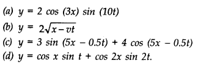
Answer: (a) It represents a stationary wave.
(b) It does not represent either a travelling wave or a stationary wave.
(c) It is a representation for the travelling wave.
(d) It is a superposition of two stationary wave.
Question 15. 14. A wire stretched between two rigid supports vibrates in its fundamental mode with a frequency of 45 Hz. The mass of the wire is 3.5 x 10-2 kg and its linear mass density is 4.0 x 10-2 kg m-3. What is (a) the speed of a transverse wave on the string, and (b) the tension in the string?
Answer:
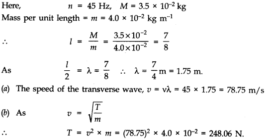
Question 15. 15. A metre-long tube open at one end, with a movable piston at the other end, shows resonance with a fixed frequency source (a turning fork of frequency 340 Hz) when the tube length is 25.5 cm or 79.3 cm. Estimate the speed of sound in air at the temperature of the experiment. The edge effect may be neglected.
Answer:
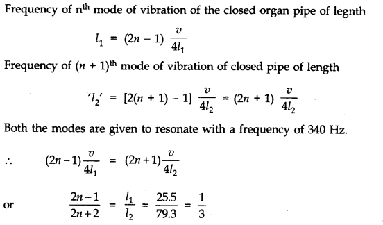
[Approximation has been used because edge effect is being ignored. Moreover, we know that in the case of a closed organ pipe, the second resonance length is three times the first resonance length.]
On simplification, n = 1
Now, (2n-1)υ/4l1 = 340. Substituting values
(2 x 1 -1) υ x 100/4 x 25.5 = 340 or υ =346.8 ms-1
Question 15. 16. A steel rod 100 cm long is clamped at its middle. The fundamental frequency of longitudinal vibrations of the rod is given to be 2.53 k Hz. What is the speed of sound in steel?
Answer: Here, L = 100 cm = 1m, v = 2.53 k Hz = 2.53 x 103 Hz
When the rod is clamped at the middle, then in the fundamental mode of vibration of the rod, a node is formed at the middle and ant mode is formed at each end.
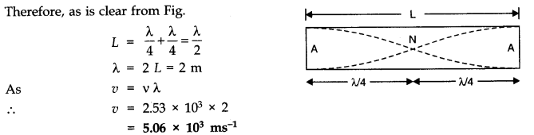
Question 15. 17. A pipe 20 cm long is closed at one end. Which harmonic mode of the pipe is resonantly excited by a 430 Hz source? Will the same source be in resonance with the pipe if both ends are open? (speed of sound in air is 340 ms-1).
Answer: Here length of pipe, 1 = 20 cm = 0.20 m, frequency v = 430 Hz and speed of sound in air υ = 340 ms-1
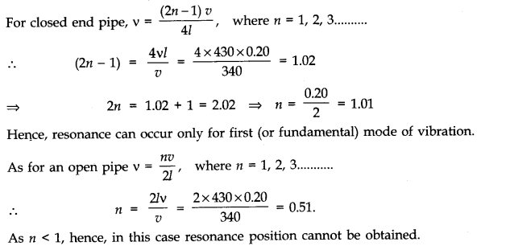
Question 15. 18. Two sitar strings A and B playing the note ‘Ga’ are slightly out of tune and produce beats of frequency 6Hz. The tension in the string A is slightly reduced and the beat frequency is found to reduce to 3Hz. If the original frequency of A is 324 Hz, what is the frequency of B?
Answer: Let υ1 and υ2 be the frequencies of strings A and B respectively.
Then, υ1 = 324 Hz, υ2 = ?
Number of beats, b = 6
υ2 = υ1 ± b = 324 ± 6 !.e., υ2 = 330 Hz or 318 Hz
Since the frequency is directly proportional to square root of tension, on decreasing the tension in the string A, its frequency υ1 will be reduced i.e., number of beats will increase if υ2 = 330 Hz. This is not so because number of beats become 3.
Therefore, it is concluded that the frequency υ2 = 318 Hz. because on reducing the tension in the string A, its frequency may be reduced to 321 Hz, thereby giving 3 beats with υ2 = 318 Hz.
Question 15. 19. Explain why (or how):
(a) in a sound wave, a displacement node is a pressure antinode and vice versa.
(b) bats can ascertain distances, directions, nature and sizes of the obstacles without any “eyes”.
(c) a violin note and sitar note may have the same frequency, yet we can distinguish between the two notes.
(d) solids can support both longitudinal and transverse waves, but only longitudinal waves can propagate in gases, and
(e) the shape of a pulse gets distorted during propagation in a dispersive medium.
Answer: (a) In a sound wave, a decrease in displacement i.e., displacement node causes an increase in the pressure there i.e., a pressure antinode is formed. Also, an increase in displacement is due to the decrease in pressure.
(b) Bats emit ultrasonic waves of high frequency from their mouths. These waves after being reflected back from the obstacles on their path are observed by the bats. These waves give them an idea of distance, direction, nature and size of the obstacles.
(c) The quality of a violin note is different from the quality of sitar. Therefore, they emit different harmonics which can be observed by human ear and used to differentiate between the two notes.
(d) This is due to the fact that gases have only the bulk modulus of elasticity whereas solids have both, the shear modulus as well as the bulk modulus of elasticity.
(e) A pulse of sound consists of a combination of waves of different wavelength. In a dispersive medium, these waves travel with different velocities giving rise to the distortion in the wave.
Question 15. 20. A train, standing at the outer signal of a railway station blows a whistle of frequency 400 Hz in still air. (i) What is the frequency of the whistle for a platform observer when the train (a) approaches the platform with a speed of 10 ms~1. (b) recedes from the platform with a speed of 10 ms-1(ii) What is the speed of sound in each case? The speed of sound in still air can be taken as 340 ms-1 .
Answer: Frequency of whistle, v = 400 Hz; speed of sound, υ= 340 ms-1 speed of train, υs= 10 ms1
(i) (a) When the train approaches the platform (i.e., the observer at rest),
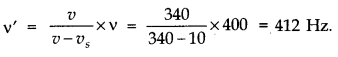
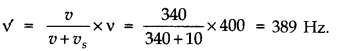
(ii) The speed of sound in each case does not change.It is 340 ms-1 in each case.
Question 15. 21. A train, standing in a station-yard, blows a whistle of frequency 400 Hz in still air. The wind starts blowing in the direction from the yard to the station with a speed of 10 ms-1. What are the frequency, wavelength, and speed of sound for an observer standing on the station’s platform? Is the situation exactly identical to the case when the air is still and the observer runs towards the yard at a speed of 10 ms-1? The speed of sound in still air can be taken as 340 ms-1?
Answer:
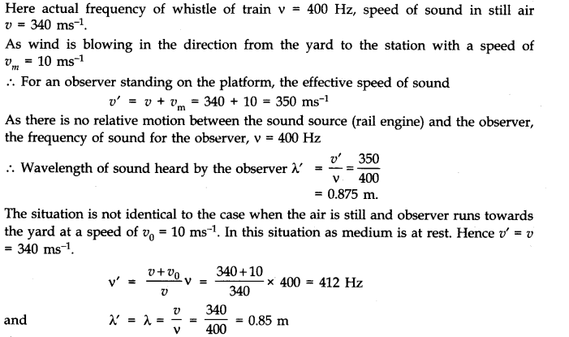
Question 15. 22. A travelling harmonic wave on a string is described by y (x, t) = 7.5 sin (0.0050x + 12t + π /4)
(a) what are the displacement and velocity of oscillation of a point at x = 1 cm, and t = 1s? Is this velocity equal to the velocity of wave propagation?
(b) Locate the points of the string which have the same transverse displacement and velocity as the x = 1 cm point at t = 2s, 5s and 11s.
Answer:
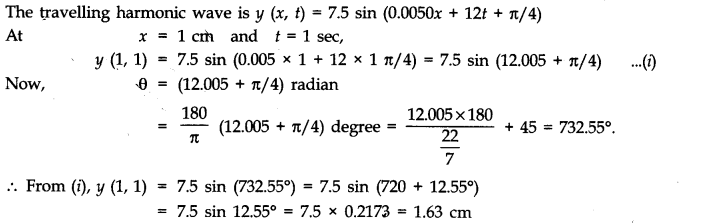
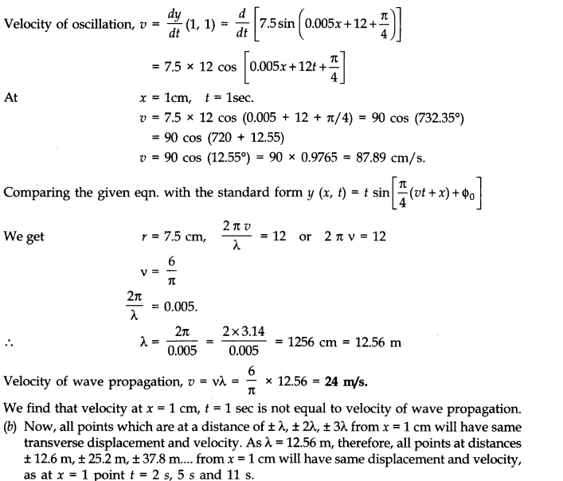
Question 15. 23. A narrow sound pulse (for example, a short pip by a whistle) is sent across a medium, (a) Does the pulse have a definite (i) frequency, (ii) wavelength, (iii) speed of propagation? (b) If the pulse rate is 1 after every 20 s, (that is the whistle is blown for a split of second after every 20 s), is the frequency of the note produced by the whistle equal to 1/20 or 0.05 Hz?
Answer: (a) In a non dispersive medium, the wave propagates with definite speed but its wavelength of frequency is not definite.
(b) No, the frequency of the note is not 1/20 or 0.50 Hz. 0.005 Hz is only the frequency ‘ of repetition of the pip of the whistle.
Question 15. 24. One end of a long string of linear mass density 8.0 x 10-3 kg m-1 is connected to an electrically driven tuning fork of frequency 256 Hz. The other end passes over a pulley and is tied to a pan containing a mass of 90 kg. The pulley end absorbs all the incoming energy so that reflected waves at this end have negligible amplitude. At t = 0, the left end (fork end) of the string x = 0 has zero transverse displacement (y = 0) and is moving along positive y-direction. The amplitude of the wave is 5.0 cm. Write down the transverse displacement y as function of x and t that describes the wave on the string.
Answer: Here, mass per unit length, g = linear mass density = 8 x 10-3 kg m-1;
Tension in the string, T = 90 kg = 90 x 9.8 N= 882 N;
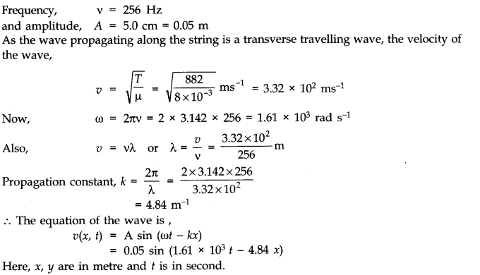
Question 15. 25. A SONAR system fixed in a submarine operates at a frequency 40.0 kHz. An enemy submarine moves towards the SONAR with a speed of 360 km h-1. What is the frequency of sound reflected by the submarine? Take the speed of sound in water to be 1450 ms-1.
Answer:
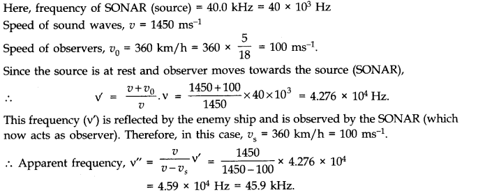
Question 15. 26. Earthquakes generate sound waves inside the earth. Unlike a gas, the earth can experience both transverse (S) and longitudinal (P) sound waves. Typically the speed of S wave is about 4.0 km s-1 . A seismograph records P and S waves from an earthquake. The first P wave arrives 4 min before the first S wave. Assuming the waves travel in straight line, at what distance does the earthquake occur?
Answer: Here speed of S wave, υs = 4.0 km s-1 and speed of P wave, υp = 8.0 km s-1. Time gap between P and S waves reaching the resimograph, t = 40 min = 240 s.
Let distance of earthquake centre = sKm
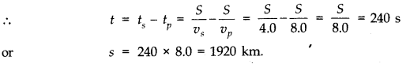
Question 15. 27. A bat is flitting about in a cave, navigating via ultrasonic beeps. Assume that the sound emission frequency of the bat is 40 kHz. During one fast swoop directly toward a flat wall surface, the bat is moving at 0.03 times the speed of sound in air. What frequency does the bat hear reflected off the wall ?
Answer: Here, the frequency of sound emitted by the bat, υ = 40 kHz. Velocity of bat, υs = 0.03 υ, where υ is velocity of sound. Apparent frequency of sound striking the wall
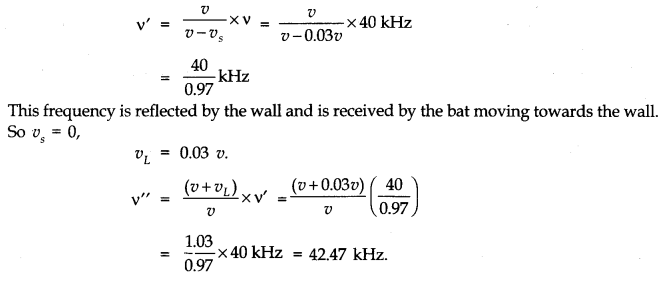
NCERT Solutions for Class 11 Physics All Chapters
- Chapter 1 Physical World
- Chapter 2 Units and Measurements
- Chapter 3 Motion in a Straight Line
- Chapter 4 Motion in a plane
- Chapter 5 Laws of motion
- Chapter 6 Work Energy and power
- Chapter 7 System of particles and Rotational Motion
- Chapter 8 Gravitation
- Chapter 9 Mechanical Properties Of Solids
- Chapter 10 Mechanical Properties Of Fluids
- Chapter 11 Thermal Properties of matter
- Chapter 12 Thermodynamics
- Chapter 13 Kinetic Theory
- Chapter 14 Oscillations
- Chapter 15 Waves
We hope the NCERT Solutions for Class 11 Physics Chapter 15 Waves help you. If you have any query regarding NCERT Solutions for Class 11 Physics Chapter 15 Waves, drop a comment below and we will get back to you at the earliest.